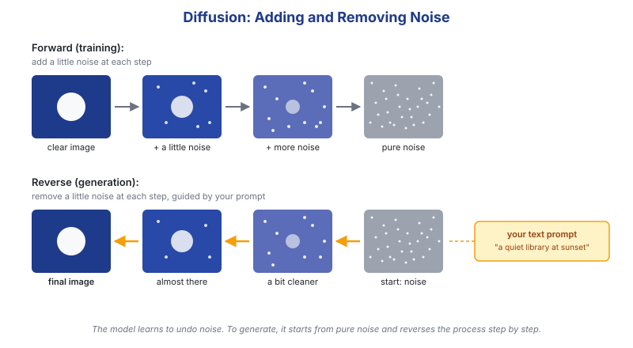
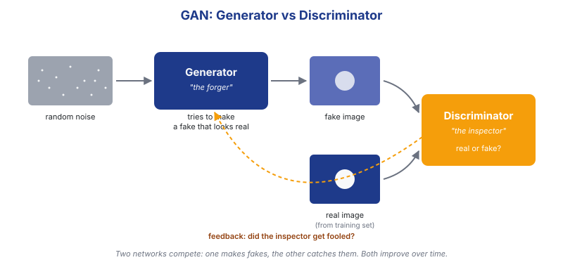
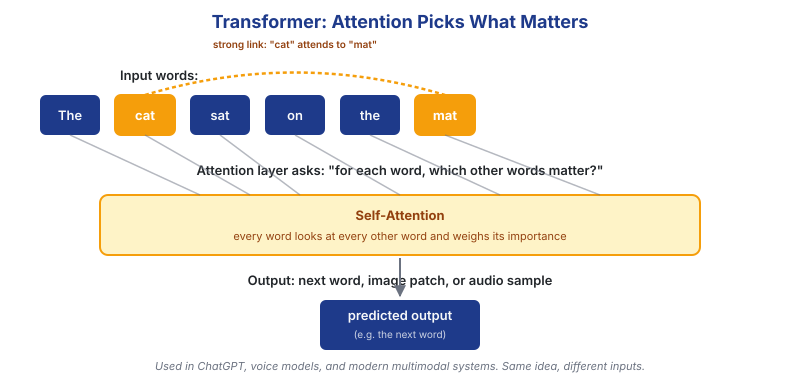

The three architectures behind generative models.
We'll keep the math out of this and stick to the intuition. Generative AI tools all share the same general recipe: train a large neural network on a huge collection of examples, let it learn the patterns inside that data, then ask it to produce something new that follows those patterns. The interesting differences are in how the network learns. Three architectures dominate today's tools.

A diffusion model learns by watching images get destroyed. During training, the network is shown a real image, then a slightly noisier version, then a noisier one, until the picture is pure static. It learns to reverse that process — to remove a little bit of noise at a time. To generate a new picture, the model starts from random noise and step by step "denoises" it into an image that matches the prompt.
Diffusion is the engine inside Stable Diffusion, DALL-E 3, and
Sora. The same idea has been adapted from images to audio and video.
🤖 Paragraph drafted with AI assistance

A GAN is a contest between two networks. The generator is a forger that tries to produce fake images. The discriminator is an inspector that tries to tell real images from fakes. They train together: every time the inspector spots a fake, the forger learns to do better. After many rounds, the forger can produce images good enough to fool both the inspector and most humans.
GANs were the dominant approach for image generation roughly between 2018 and 2022. They are still used in some tools — especially face generation and image-to-image translation — but most flagship image models have shifted to Diffusion since then.

Transformers were originally designed for language. The key idea is the attention mechanism: when the network reads a sequence (say, a sentence), it can decide which earlier words are most relevant for predicting the next one. This turns out to be a very flexible building block. The same architecture, with small adjustments, now powers chatbots, voice models, music models, and the text-understanding parts of image and video generators.
Most modern generative tools are hybrids: a Transformer reads and understands the prompt, then hands its output to a Diffusion model that draws the image, or to another Transformer that produces the audio.
| Architecture | What it generates today | Strengths | Weaknesses |
|---|---|---|---|
| Diffusion | Images, video, audio | High quality, controllable, current state of the art for images | Slow at generation time (many denoising steps) |
| GANs | Faces, image-to-image, some video | Fast at generation, sharp results | Hard to train, prone to "mode collapse" (limited variety) |
| Transformers | Text, code, music, audio, multimodal | Scales very well, handles long context | Heavy on memory and compute, especially for long sequences |
Knowing which architecture is behind a tool helps explain its behavior — why Diffusion-based image tools are slow but detailed, why Transformer-based chat models can drift on long answers, and why most modern systems combine both. Understanding the basics is also the first step toward using these tools responsibly. This is a simplified view — each of these architectures has years of research behind it, and we've only touched the surface.